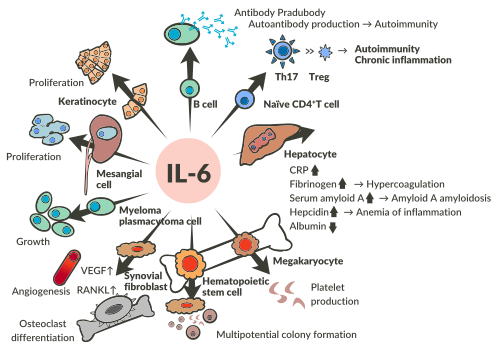

Ações da interleucina (IL)-6.

Fonte: Tanaka; Kishimoto, 2012.
Interleucinas (ILs) são um grupo complexo de cerca de 60 glicoproteínas secretadas por linfócitos com o objetivo de modular a resposta imune e inflamatória, havendo ILs com atividade anti-inflamatória e imunossupressora, como a IL-10, e as pró-inflamatórias, como a IL-6 e a IL-1. Atualmente, anticorpos monoclonais contra a IL-6 (p. ex.: tocilizumabe) têm sido usados em doenças inflamatórias crônicas, por exemplo, na artrite reumatoide.